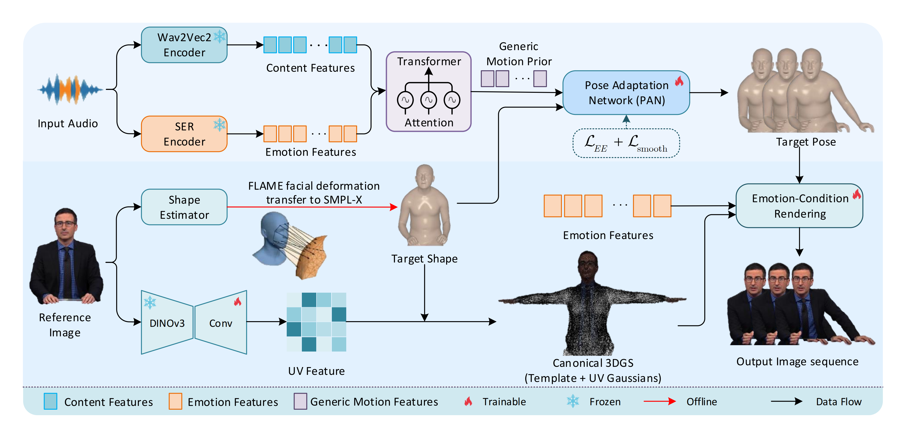

Generating expressive 3D avatars from a single reference image and driving speech requires both body-compatible motion and appearance that responds appropriately to emotion-related acoustic cues. Existing approaches typically emphasize either explicit motion control or photorealistic video synthesis, leaving the interaction among speech-driven motion, target-body geometry, and expressive appearance insufficiently modeled. We present EchoAvatar, a framework that addresses these issues through shape-conditioned motion adaptation and emotion-conditioned 3D Gaussian rendering. Its geometric foundation, UniTopo-X, transfers FLAME facial deformations onto the original SMPL-X topology, preserving surface correspondences across facial animation, body articulation, and Gaussian deformation. Speech content and acoustic emotion jointly guide the prediction of facial, hand, and upper-body motion. A lightweight Pose Adaptation Network adjusts this motion to the target body shape through residual corrections. Acoustic emotion features also directly condition the neural appearance refiner, allowing affective cues to influence rendering beyond their contribution to motion. On the PATS dataset, EchoAvatar achieves a Fréchet Gesture Distance of 3.92 on motion recovered from generated videos, a lip-synchronization confidence of 9.85, an identity cosine similarity of 0.646, and a Fréchet Video Distance of 166.21. Zero-shot evaluation on the TED dataset further supports cross-dataset robustness, while component analyses and human evaluation support the geometric adaptation and expressive rendering design.
Framework

Overview of EchoAvatar. Speech content and emotion features jointly condition a Transformer to predict facial, hand, and upper-body motion. A single reference image supplies body shape and appearance features for constructing a canonical Gaussian avatar on the UniTopo-X scaffold. PAN adapts the predicted motion to the target body geometry, while emotion features directly condition appearance refinement to complement motion-driven Gaussian rendering. Snowflakes and flames indicate frozen and trainable components, respectively. Black arrows denote data flow; the red arrow marks offline FLAME--SMPL-X correspondence construction.
Overview Video
Qualitative Comparison
Comparison with representative 2D audio-driven avatar animation methods. For each example, the first column shows the input reference image, followed by the generated results from different approaches under the same driving audio.
Qualitative Comparison
Comparison with representative 3D avatar animation methods. All compared approaches are driven by the same predicted motion sequence. The first column presents the generated driving motion, followed by the rendered avatar results produced by different methods using the same motion input.
Generalization
EchoAvatar generalizes to diverse identities using only a single reference image at inference time, without subject-specific optimization.
3D Consistency
Multi-view rendering results demonstrate that EchoAvatar maintains coherent appearance and 3D structure across different camera viewpoints.